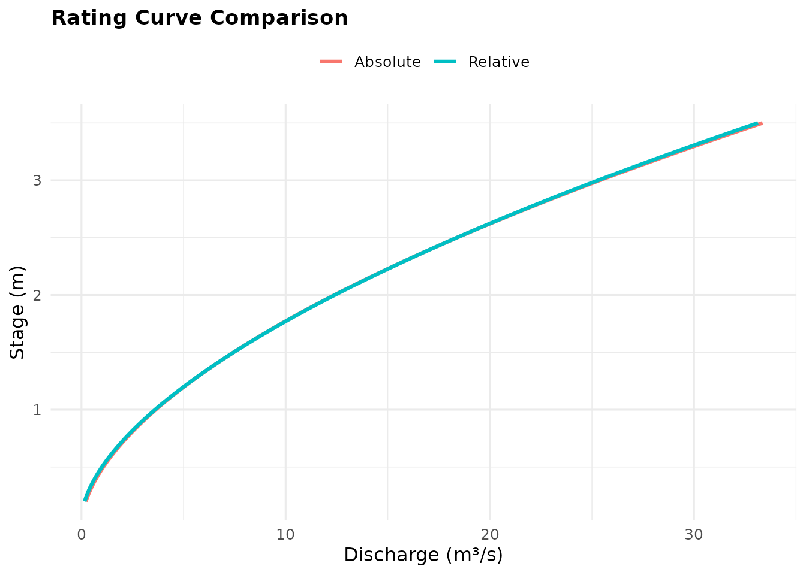

Non-Standard Rating Optimisation: When and Why
Jonathan Payne, Environment Agency Flood Forecasting
August 2026
Source:vignettes/non_standard_optimisation.Rmd
non_standard_optimisation.RmdWhy deviate from the default fit
rate_optimise()’s default call – no
objective, no n_bounds, no
gauging_datetime – makes three assumptions that are
entirely reasonable most of the time:
- Every gauging counts equally in absolute discharge terms: a 1 m³/s miss is a 1 m³/s miss, whether the true flow is 2 m³/s or 2,000 m³/s.
- The exponent
ninQ = C(H-a)^nis estimated purely from whatever gaugings you have – no outside knowledge of the channel is brought in. - Every gauging counts equally regardless of when it was taken.
Each of these can fail to hold. This vignette covers the two
situations where the package already has an answer – proportional
gauging error (objective = "relative") and sparse,
physically-constrained extremes (n_bounds) – and one where
the groundwork exists but the fix doesn’t yet (gauging age,
gauging_datetime). See
vignette("rating_curves_guide") for the standard workflow
these options extend, and ROBUST_FITTING.md in the package
sources for a shorter, code-free version of this same material.
When absolute error is the wrong error model
The problem
Streamflow gauging accuracy is conventionally expressed as a percentage of the reading, not a fixed number of cubic metres per second (Herschy 2009) – a gauging is typically accurate to within a few percent whether the flow is a trickle or a torrent. The default fit doesn’t know this: it minimises absolute squared error, so a limb with both low and high flows in it will fit the high flows preferentially, simply because their absolute residuals are numerically larger. The low-flow shape can suffer as a result.
Demonstration
set.seed(11)
stage_m <- seq(0.2, 3.5, by = 0.03)
true_C <- 4; true_a <- 0.05; true_n <- 1.7
discharge_true_cms <- true_C * (stage_m - true_a)^true_n
# Proportional (percentage) noise, not fixed-magnitude noise -- this is
# what "gauging accuracy is a few percent of the reading" looks like.
discharge_cms <- discharge_true_cms * exp(rnorm(length(stage_m), sd = 0.08))
fit_absolute <- rate_optimise(discharge_cms, stage_m)
fit_relative <- rate_optimise(discharge_cms, stage_m, objective = "relative")
rbind(
data.table(objective = "absolute", fit_absolute@limbs[, .(C, a, n, rmse_cms, r_squared)]),
data.table(objective = "relative", fit_relative@limbs[, .(C, a, n, rmse_cms, r_squared)])
)
#> objective C a n rmse_cms r_squared
#> <char> <num> <num> <num> <num> <num>
#> 1: absolute 3.626593 -0.001674168 1.770528 1.251290 0.9843990
#> 2: relative 3.915652 0.047154818 1.723349 1.253302 0.9843488Both rows report rmse_cms/r_squared on the
same natural discharge scale, so they’re directly comparable –
objective only changes what the optimiser treats as “best,”
not how the result is reported afterward. With proportional noise like
this, objective = "relative"‘s
C/a/n sit closer to the true
generating values, because the low-flow gaugings (whose proportional
errors are just as informative as the high-flow ones’ proportional
errors) get to pull their proper share of the fit’s weight.
plot_rating_curves(Absolute = fit_absolute, Relative = fit_relative)
When to reach for it
If your gaugings span a wide flow range and you know (or suspect)
accuracy is roughly proportional across that range – true of most
current-meter and ADCP gauging – objective = "relative" is
a reasonable default choice, not just a fix for a diagnosed problem. It
costs nothing when the two objectives happen to agree.
When the top of the curve needs a physical anchor
The problem
The top of a rating – the part covering the biggest floods – is
structurally the least-gauged part of the record, because big floods are
rare and often dangerous or impractical to gauge directly. Left alone,
the fit has to infer the curve’s steepness up there from whatever thin
evidence exists, which can drift to an implausible exponent. But
open-channel hydraulics already tells us roughly what to expect: about
1.5 for a rectangular control, about 2.5 for a triangular/V-notch one,
and Manning’s equation gives roughly 5/3 for a wide channel (Herschy
2009; Rantz et al. 1982) – see
vignette("rating_curves_guide")’s “Why a power law” section
for the full derivation. n_bounds lets that theory anchor
the fit instead of leaving it to guess. For what these controls actually
look like, and how to read a cross-section into a starting
n_bounds, see vignette("n_bounds_guide").
Demonstration
set.seed(23)
# A channel control theory says should be close to rectangular (n ~ 1.5),
# but the fit only has a handful of gaugings above stage 2.5 -- exactly
# the "sparse extremes" situation this section is about.
stage_dense_m <- seq(0.2, 2.5, by = 0.03)
stage_sparse_m <- c(2.7, 2.9, 3.1, 3.3)
stage_m <- c(stage_dense_m, stage_sparse_m)
true_C <- 5; true_a <- 0; true_n <- 1.5
discharge_true_cms <- true_C * (stage_m - true_a)^true_n
discharge_cms <- discharge_true_cms * exp(rnorm(length(stage_m), sd = 0.1))
fit_unconstrained <- rate_optimise(discharge_cms, stage_m)
fit_bounded <- rate_optimise(discharge_cms, stage_m, n_bounds = c(1.4, 1.6))
rbind(
data.table(fit = "unconstrained", fit_unconstrained@limbs[, .(C, a, n, rmse_cms, r_squared)]),
data.table(fit = "n_bounds = c(1.4, 1.6)", fit_bounded@limbs[, .(C, a, n, rmse_cms, r_squared)])
)
#> fit C a n rmse_cms r_squared
#> <char> <num> <num> <num> <num> <num>
#> 1: unconstrained 5.767712 0.08480926 1.374085 1.093207 0.9732990
#> 2: n_bounds = c(1.4, 1.6) 5.558503 0.05907584 1.400000 1.093733 0.9732733With so little data above stage 2.5, the unconstrained exponent can
drift well away from the true, physically-expected value of 1.5 – an
extrapolation risk that matters most exactly where a design flood
assessment would use the curve. n_bounds = c(1.4, 1.6)
holds the fit to the range channel-control theory actually supports, at
the cost of a (usually small) increase in fitted error over the
sparse, noisy region it constrains.
rate_optimise_constrained() honours the same bound across
every limb it refits, not just the one it leaves alone, so a multi-limb
rating stays consistent with the constraint throughout.
What this is not
Le Coz et al. (2014) make the general case for combining hydraulic
knowledge with uncertain gaugings when estimating a rating –
n_bounds is this package’s answer to that case, but it is a
hard or soft box constraint, not a
prior. A constraint rules a range of n in
or out outright; a true Bayesian prior instead expresses a starting
belief that the data can still overturn, given enough of it. That
version – where channel-control theory would be a prior distribution on
n rather than a bound – is a separate, larger,
not-yet-started idea tracked as issue #11.
Reach for n_bounds when you’re confident enough in the
channel-control type to rule out other exponents; wait for #11 – or,
today, look at bdrc (Hrafnkelsson et al. 2022), an R
package already implementing a true Bayesian power-law fit – if you’d
rather let the data override a merely plausible assumption.
When gauging age matters
The problem
Channels change: the bed shifts, vegetation grows and dies back, sediment moves, a flood re-cuts the cross-section (Mansanarez et al. 2019, “Shift happens!”, describe exactly this and how to adjust a rating when it occurs). A rating fitted from gaugings spanning many years implicitly treats a measurement from a decade ago as equally informative about today’s channel as one from last month, which won’t always be true.
What exists today
rate_optimise() and
rate_optimise_segmented() accept an optional
gauging_datetime, and now an opt-in
age_halflife that weights each gauging by age – exponential
decay down to a floor (age_min_weight) that stops a
genuinely large but old flood ever being discounted to nothing, though
it isn’t magnitude-aware (an old extreme and an old ordinary gauging
decay identically). vignette("recency_weighting_guide")
covers the full formula, a worked example, and what the floor does and
doesn’t protect against; the fuller, magnitude-aware version remains
open in issue
#9.
gauging_datetime <- as.Date("2015-01-01") + round(seq_along(stage_dense_m) * 20)
fit_dated <- rate_optimise(
discharge_cms[seq_along(stage_dense_m)], stage_dense_m,
gauging_datetime = gauging_datetime
)
head(fit_dated@gaugings)
#> discharge_cms stage_m gauging_datetime limb
#> <num> <num> <Date> <int>
#> 1: 0.4559383 0.20 2015-01-21 1
#> 2: 0.5280606 0.23 2015-02-10 1
#> 3: 0.7262610 0.26 2015-03-02 1
#> 4: 0.9342280 0.29 2015-03-22 1
#> 5: 0.9999470 0.32 2015-04-11 1
#> 6: 1.1565643 0.35 2015-05-01 1age_halflife is left NULL by default, so
supplying gauging_datetime alone – as above – still changes
nothing about the fit; fit_dated’s coefficients are
identical to what an undated call would produce. Recency weighting only
switches on once age_halflife is set too.
Where to go next
vignette("rating_curves_guide") covers the standard
fitting workflow these options extend. ROBUST_FITTING.md in
the package sources gives a shorter, code-free version of this same
material, written for anyone who wants the reasoning without the R. The
GitHub issues linked throughout (#9, #11) carry the open technical and
design questions for what isn’t built yet.
References
Herschy, R. W. (2009). Streamflow Measurement (3rd ed.). Routledge.
Hrafnkelsson, B., Sigurdarson, H., Rögnvaldsson, S., Jansson, A. Ö., Vias, R. D., & Gardarsson, S. M. (2022). Generalization of the power-law rating curve using hydrodynamic theory and Bayesian hierarchical modeling. Environmetrics, 33(2), e2711.
Le Coz, J., Renard, B., Bonnifait, L., Branger, F., & Le Boursicaud, R. (2014). Combining hydraulic knowledge and uncertain gaugings in the estimation of hydrometric rating curves: a Bayesian approach. Journal of Hydrology, 509, 573-587.
Mansanarez, V., Westerberg, I. K., Lam, N., & Lyon, S. W. (2019). Shift happens! Adjusting stage-discharge rating curves to morphological changes at known times. Water Resources Research, 55(8), 6642-6661.
Rantz, S. E., et al. (1982). Measurement and Computation of Streamflow (Water Supply Paper 2175). U.S. Geological Survey.